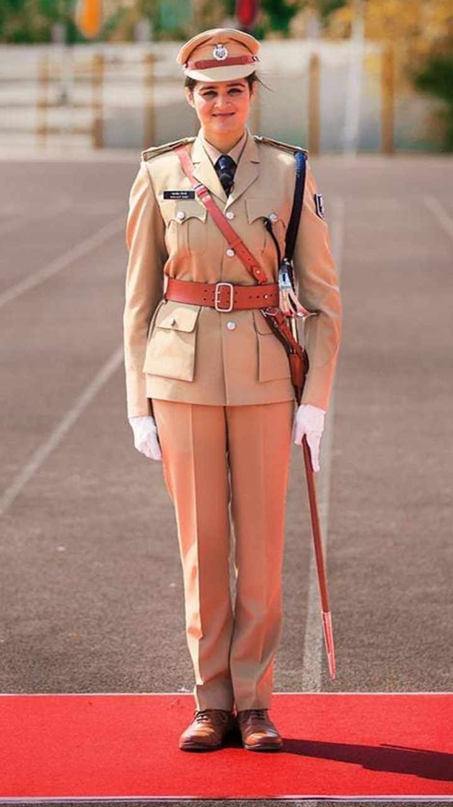
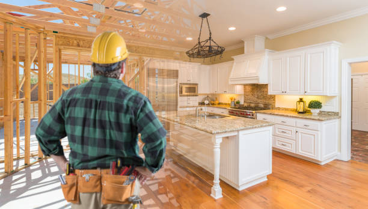

Apex Public School,Fatehabad |
| Home About School Principal's Message Features Staff Fee Structure Contact Us |

 
.  |
Schools are organized spaces purposed for teaching and learning. The classrooms where teachers teach and students learn are of central importance. Classrooms may be specialized for certain subjects, such as laboratory classrooms for science education and workshops for industrial arts education.A school is an educational environment where children go to learn from a teacher. Topics such as reading, writing, and mathematics are central to education.
Most of a student's time is spent in a classroom. This is where 10 to 30 people sit to take part in educational discussion. In the United States, the average number of students per classroom in primary schools is 23.1.[1]
The term "school" is used for many educational environments – particularly in North America. In North America, a person taking a first degree at a university is often self-described as "going to school". In Europe that would never be the case. They would describe themselves as "going to university". The style of university education can be so different between countries.
There are different types of schools: elementary schools (primary in the UK), middle schools (secondary in the UK), and so on.
In many places around the world, children must go to school for a certain number of years. Learning may take place in the classroom, in outside environments, or on visits to other places. Colleges and universities are places to learn for students over 17 or 18 years of age.[2] Vocational schools teach skills people need for jobs.
Some people attend school longer than others. This is because some jobs require more training than others, like for example becoming a doctor takes about 10-14 years of education.[3] For young children, one teacher may teach all subjects. Teachers for older students are more specialized, and they only teach a few subjects. Common subjects taught include science, arts such as music, humanities, like geography and history, and languages.
|
|
Home
About School Principal's Message Features Staff Fee Structure Contact Us |

|
This school claims to take personal care of each student ensuring that he is all the time relaxed and this is the peculiarity of this school. The enlightened people of the district Fatehabad who have watched the functioning of our school with considerable critical interest are the witness to the fact that the school has made a concrete academic contribution to the society. It has been reckoned as a school with difference perhaps unique in itself. The teaching approaches and the integrity of the staff and the administration are of the quality that a common school lacks. A particular mention must be made of the fact that what we know about education is being used very ingeniously to suit the needs of the children of our school. |